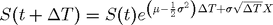

Contents
function demoCode_geometricBrowianMotion
demoCode_geometricBrowianMotion
Parameters for the simulation
t0 = 0; S0 = 100.0; mu = 0.3; sigma = 0.4; M = 3; % Number of trajectories T = 2; % Length of the simulation interval N = 5; % Number of time steps
Time step
deltaT = T/N;
Monitoring times
t = linspace(t0,t0+T,N+1);
Simulate Gaussian white noise
X = randn(M,N)
X =
0.7646 -1.0780 0.2443 -0.0714 1.1680
0.5115 -0.8974 0.9952 0.2236 -0.4761
0.3185 -1.5979 0.2079 0.9568 -0.7023
Compute the exponential factors

e = exp((mu-0.5*sigma^2)*deltaT + sigma*sqrt(deltaT)*X)
e =
1.3250 0.8313 1.1616 1.0724 1.4674
1.2428 0.8702 1.4046 1.1555 0.9681
1.1836 0.7289 1.1510 1.3910 0.9142
Prepare for the simulation
S = [S0*ones(M,1) e]
S = 100.0000 1.3250 0.8313 1.1616 1.0724 1.4674 100.0000 1.2428 0.8702 1.4046 1.1555 0.9681 100.0000 1.1836 0.7289 1.1510 1.3910 0.9142
Simulate geometric Brownian motion
S = cumprod(S,2) % simulation
S = 100.0000 132.5011 110.1543 127.9574 137.2265 201.3626 100.0000 124.2846 108.1522 151.9136 175.5405 169.9360 100.0000 118.3608 86.2709 99.2947 138.1216 126.2749
Plot the simulated trajectories
figure(1); clf; plot(t,S); xlabel('t'); ylabel('S(t)')